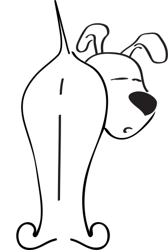
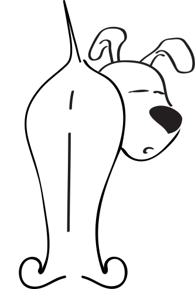

NALATENSCHAP
Denk aan de dieren in jouw testament
Het dierenthuisje is een door de overheid erkende organisatie en heeft recht op lage successierechten die hiervoor van toepassing zijn. Neen! Het dierenthuisje staat niet vermeld in Testament.be om de eenvoudige reden dat daarin enkel grote verenigingen kunnen staan die reeds heel wat legaten hebben ontvangen. De prijs voor een vermelding in dit boek bedraagt immers ca 9000 euro per jaar! Dat geld kunnen wij absoluut niet missen. Wij zijn van mening dat elke euro naar de dieren moet gaan en niet naar één of andere publiciteitstunt.
Zelfs als je erfgenamen hebt, is het verstandig om aan de dieren te denken in je testament dankzij het duo-legaat. Wist je dat je vzw Het Dierenthuisje kan begunstigen in je testament zonder jouw andere erfgenamen te benadelen? Meer nog, heel vaak houden andere erfgenamen zelfs een hoger netto-bedrag over indien je ons ook mee opneemt in het testament, de enige ‘vrijwillige’ benadeelde is de Belgische staat. Dit doe je door een duolegaat of ‘legaat vrij van successierechten’ op te stellen. Het duolegaat is een wettelijke constructie waarbij je vzw Het Dierenthuisje naast jouw andere erfgenamen opneemt in het testament waarbij alle successierechten gedragen worden door vzw Het Dierenthuisje. Hoe verder het verwantschap, hoe voordeliger voor jouw erfgenamen. Voor erfgenamen in rechte lijn (kinderen-ouders) is het duolegaat nuttig indien de erfenis meer dan 250.000 euro bedraagt. Spreek erover met je notaris en laat hem het voordeel berekenen in de specifieke situatie.Een rekenvoorbeeldje maakt dit het best duidelijk (het rekenvoorbeeld is gebaseerd op de successierechten in Vlaanderen):Marie heeft geen familie en laat bij testament een bedrag van 25.000 euro na aan haar vriendin Julie. Zonder duolegaat houdt Julie van dit mooie bedrag, na het betalen van de successierechten 13.750 euro over.Indien Marie een duolegaat had opgesteld waarbij ze 15.000 euro nalaat aan Julie en 10.000 euro aan vzw Het Dierenthuisje. Houdt Julie werkelijk 15.000 euro over en vzw Het Dierenthuisje, na betaling van de successierechten 2.370 euro. Julie tevreden en onze dieren ook!
Zonder duolegaat
| BEVOORDEELDE PARTIJ |
JULIE |
HET DIERENTHUISJE |
BELGISCHE STAAT |
| Bruto-legaat |
25.000 |
0 |
|
| Te betalen successierechten |
-11.250 |
0 |
11.250 |
| Netto voordeel |
13.750 |
0 |
11.250 |
Met duolegaat
| BEVOORDEELDE PARTIJ |
JULIE |
HET DIERENTHUISJE |
BELGISCHE STAAT |
| Bruto-legaat |
15.000 |
10.000 |
|
| Te betalen successierechten op 10.000 (8%) |
-880 |
-880 |
|
| Te betalen successierechten op 15.000 (45%) |
0 |
-6.750 |
6.750 |
| Netto voordeel |
15.000 |
2.370 |
7.630 |
Nog een voorbeeld
Jan heeft een vermogen van 200.000 euro dat hij bij testament wenst na te laten aan zijn neef Dirk. Via het wettelijke stelsel (dus zonder duolegaat) houdt Dirk 90.000 euro over.Als Jan met een duolegaat 100.000 euro nalaat aan vzw Het Dierenthuisje en 100.000 euro aan zijn neef Dirk, erft Dirk een netto-bedrag van 100.000 euro en vzw Het Dierenthuisje ook maar liefst 43.700 euro: opnieuw wint iedereen, behalve de Belgische Staat…
Zonder duolegaat
| BEVOORDEELDE PARTIJ |
DIRK |
HET DIERENTHUISJE |
BELGISCHE STAAT |
| Bruto-legaat |
200.000 |
0 |
|
| Te betalen successierechten op 1ste schijf van € 75.000 (45%) |
-33.750 |
0 |
33.750 |
| Te betalen successierechten op 2de schijf van € 50.000 (55%) |
-27.500 |
0 |
27.500 |
| Te betalen successierechten op 3de schijf van € 75.000 (65%) |
-48.750 |
0 |
48.750 |
| Netto voodeel |
90.000 |
0 |
110.000 |
Met duolegaat
| BEVOORDEELDE PARTIJ |
DIRK |
HET DIERENTHUISJE |
BELGISCHE STAAT |
| Bruto-legaat |
100.000 |
100.000 |
|
| Te betalen successierechten op 1ste schijf van € 100.000 (8%) |
-8.800 |
-8.800 |
8.800 |
| Te betalen successierechten op 2de schijf van € 75.000 (45%) |
0 |
-33.750 |
33.750 |
| Te betalen successierechten op 3de schijf van € 25.000 (55%) |
0 |
-13.750 |
13.750 |
| Netto voodeel |
100.000 |
43.700 |
56.300 |


 
